Historical Insignia
Copy the decal's URL, select a decal in Sprocket Tank Design, and paste the link into the URL field.
- 
132nd amoured brigade (sweden)
https://sprockettools.github.io/img/132nd_amoured_brigade_(sweden).png
Uploaded by: charlieuwu
Tags: sweden, number, 132, 132nd
- 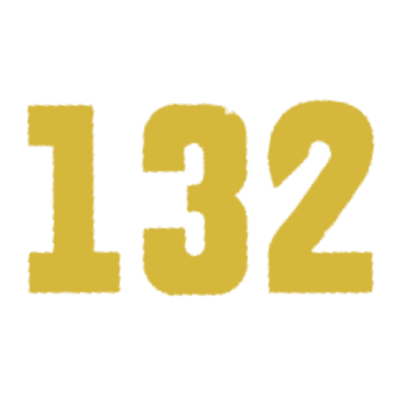
132nd armoured brigade yellow
https://sprockettools.github.io/img/132nd_amoured_brigade_(sweden)_(.png
Uploaded by: charlieuwu
Tags: sweden, number, 132, 132nd

1st armored division
https://sprockettools.github.io/img/1starm.png
Uploaded by: personification
Tags: poland

2nd armored brigade (china)
https://sprockettools.github.io/img/2nd_armored_brigade_(people's_re.png
Uploaded by: personification
Tags: china
- 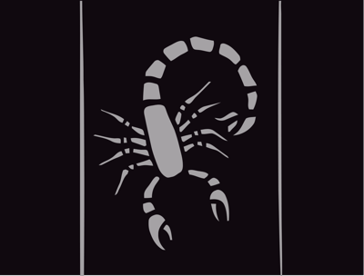
2nd armored division
https://sprockettools.github.io/img/2ndarmaus.png
Uploaded by: personification
Tags: australian
- 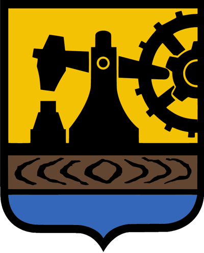
3rd silesian grenadiers regiment
https://sprockettools.github.io/img/3rd_silesian_grenadiers_regiment.png
Uploaded by: thesilentradio
Tags: poland, ww2, emblem, regiment
- 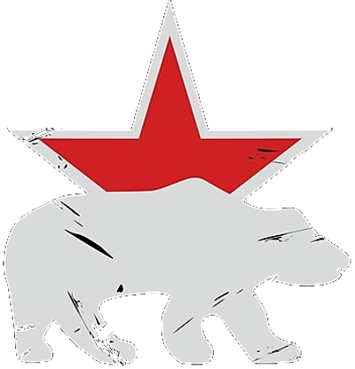
7th guards battalion
https://sprockettools.github.io/img/7th_guards_separate_heavy_tank_b.png
Uploaded by: zeappelman
Tags: soviet, brigade, emblem
-
bosch 1921 logo
https://sprockettools.github.io/img/bosch_1921_logo.png
Uploaded by: theconeezeanemperor
Tags: german, bosch, company, logo
- 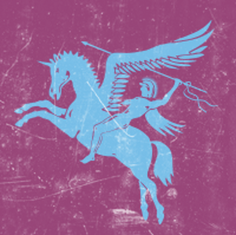
british 1st airborne unit marking
https://sprockettools.github.io/img/british_1st_airborne_unit_markin.png
Uploaded by: danyelpaladin123
Tags: british, airborne
- 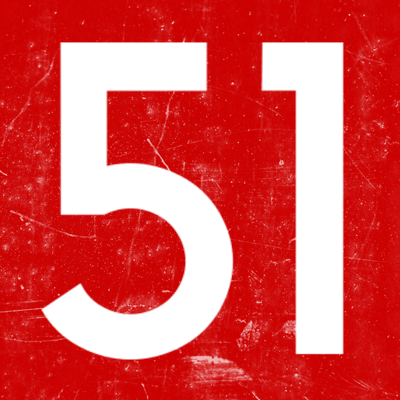
british armoured regiment marking
https://sprockettools.github.io/img/british_armoured_regiment_markin.png
Uploaded by: danyelpaladin123
Tags: british, armored regiment, 51
- 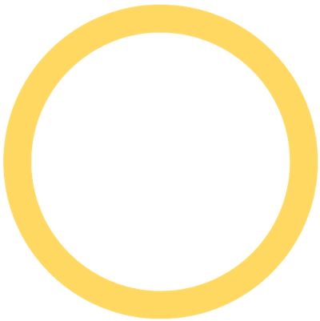
british squadron marking
https://sprockettools.github.io/img/british_squadron_marking.png
Uploaded by: danyelpaladin123
Tags: british, squadron marking, squadron

british tank serial number 1928
https://sprockettools.github.io/img/british_tank_serial_number.png
Uploaded by: danyelpaladin123
Tags: british, tank, serial number

bundeswehr kreuz
https://sprockettools.github.io/img/bundeswehr_kreuz.png
Uploaded by: theconeezeanemperor
Tags: german, bundeswehr, cross, logo
-
czech roundel weathered
https://sprockettools.github.io/img/czech_roundel_weathered.png
Uploaded by: doncapitano7974
Tags: czech

flag of sweden
https://sprockettools.github.io/img/flag_of_sweden.png
Uploaded by: charlieuwu
Tags: sweden, flag
- 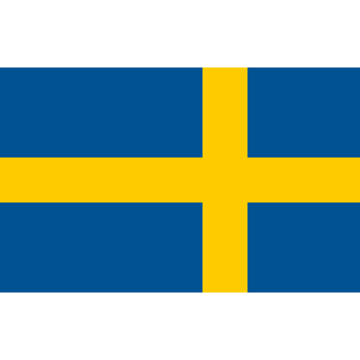
flag of sweden inverted
https://sprockettools.github.io/img/flag_of_sweden_inverted.png
Uploaded by: charlieuwu
Tags: sweden, flag, inverted
- 
french tank insignia
https://sprockettools.github.io/img/frenchtankinsignia.png
Uploaded by: danyelpaladin123
Tags: france
- 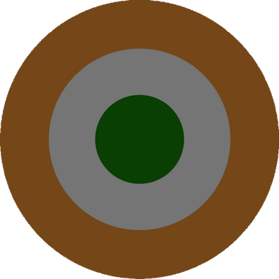
indian insignia
https://sprockettools.github.io/img/indian_insignia.png
Uploaded by: stuflak_
Tags: india
- 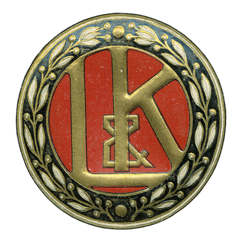
laurin klement logo
https://sprockettools.github.io/img/laurin__klement_logo.png
Uploaded by: theconeezeanemperor
Tags: laurin-klement, hekar-voris, fictional, austria-hungary, car company, logo, insignia
- 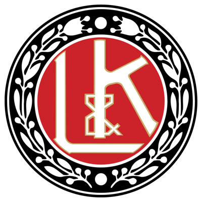
laurin__klement_logo_modernised
https://sprockettools.github.io/img/laurin__klement_logo_modernised.png
Uploaded by: theconeezeanemperor
Tags: laurin-klement, hekar-voris, fictional, austria-hungary, car company, logo, insignia
-
laurin klement logo stylised
https://sprockettools.github.io/img/laurin__klement_logo_stylised.png
Uploaded by: theconeezeanemperor
Tags: laurin-klement, hekar-voris, fictional, austria-hungary, car company, logo, insignia
-
league of nations logo
https://sprockettools.github.io/img/league_of_nations_logo.png
Uploaded by: eden_seb
Tags: international, logo, insignia, symbol, historical
- 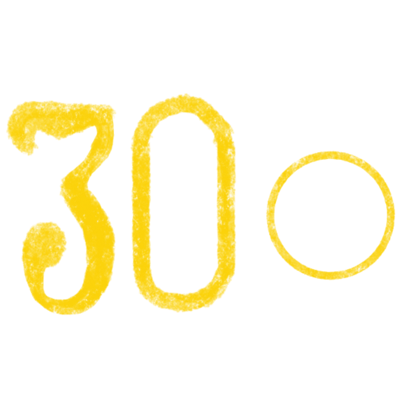
olgedowt yellow 30
https://sprockettools.github.io/img/olgedowt34yellow30.png
Uploaded by: nathanthedummy
Tags: soviet, historical tank ace
- 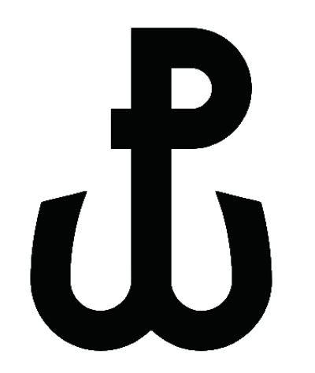
polish anchor
https://sprockettools.github.io/img/polish_anchor.png
Uploaded by: thesilentradio
Tags: poland, ww2
- 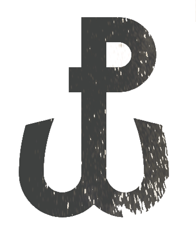
polish anchor weathered
https://sprockettools.github.io/img/polish_anchor_weathered.png
Uploaded by: thesilentradio
Tags: poland, ww2, weathering
- 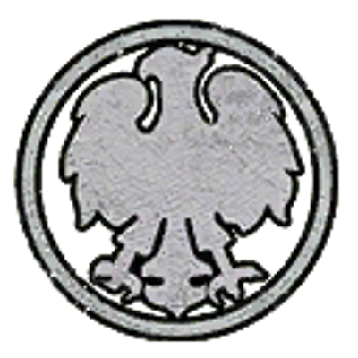
polish eagle insignia
https://sprockettools.github.io/img/polish_eagle_insignia.png
Uploaded by: thecrusade_er
Tags: poland, wwii, eagle, insignia, symbol, historical
- 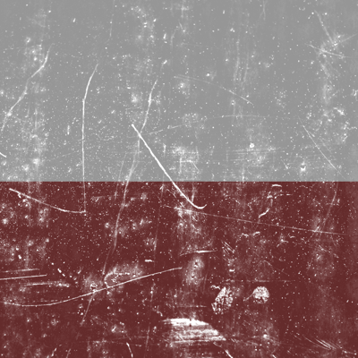
polish flag weathered
https://sprockettools.github.io/img/polish_flag_weathered.png
Uploaded by: thecrusade_er
Tags: polish, flag, weathered

polish interwar tankette insigni
https://sprockettools.github.io/img/polish_interwar_tankette_insigni.png
Uploaded by: thesilentradio
Tags: poland, interwar, tankette
-
royal tank regiment marking
https://sprockettools.github.io/img/royal_tank_regiment_marking.png
Uploaded by: danyelpaladin123
Tags: british, royal tank regiment, royal, tank
- 
russian airborne insignia
https://sprockettools.github.io/img/russian_airborne_insignia.png
Uploaded by: zeappelman
Tags: russian, vdv
- 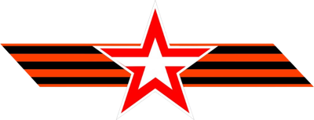
russian parade stripe
https://sprockettools.github.io/img/russian_parade_stripe.png
Uploaded by: zeappelman
Tags: russian, parade, modern
- 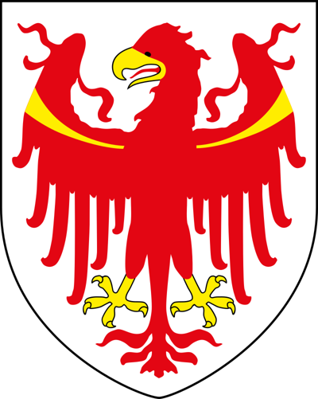
south tyrol arms
https://sprockettools.github.io/img/south_tyrol_arms.png
Uploaded by: theconeezeanemperor
Tags: austria, austria-hungary, tyrol, south-tyrol, arms, insignia
-
white chevron
https://sprockettools.github.io/img/white_chevron.png
Uploaded by: zeappelman
Tags: chevron
 Home
Gear Calculator
Contests
Random Tank Picker
Guides
Credits
Get Trolled
Decal Catalog
RGB Decal Maker
Home
Gear Calculator
Contests
Random Tank Picker
Guides
Credits
Get Trolled
Decal Catalog
RGB Decal Maker